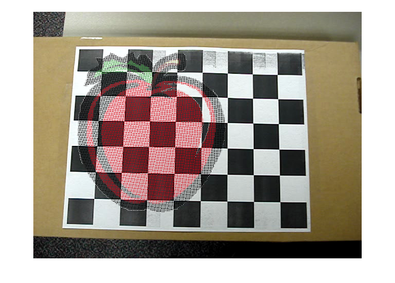
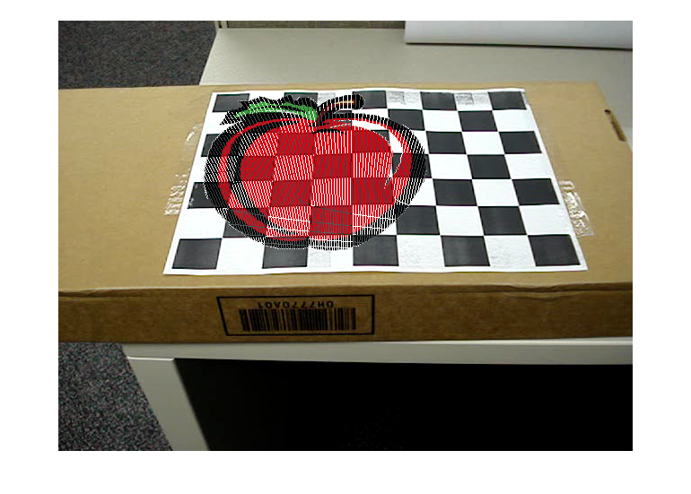

Contents
- part 1 Camera Calibration using 3D calibration object
- 1.1 Draw the image points, using small circles for each image point
- 1.2-1.3 matrix P
- 1.4 projection matrix M
- 1.5 translation vector
- 1.6 M'(first 3 columns of M)
- 1.7 RQ factorization of M'
- 1.8 rotation matrix R_z
- 1.9 calibration matrix K, focal length, pixel coordinates of the image center of the camera
- Part II: Camera Calibration using 2D calibration object (70 points)
- Corner Extraction and Homography computation (10 points)
- Computing the Intrinsic and Extrinsic parameters (30 points)
- Improve accuracy
- part 3 Augmented Reality 101
- augument an image
- augment a cube
- Extra credit: augment a pyramid
- 1.2 function
- 2.2 projecting grid corners to the image by H and calculate the reprojection error for each corner
- 2.2 Computing the Intrinsic and Extrinsic parameters (30 points)
- 3.2 calculate edges from vertex
function result = main_script(disp_idx);
close all
result = struct();
part 1 Camera Calibration using 3D calibration object
1.1 Draw the image points, using small circles for each image point
disp('****************************************************'); corner_W = [2,2,2;-2,2,2;-2,2,-2;2,2,-2;2,-2,2;-2,-2,2;-2,-2,-2;2,-2,-2]; corner_img = [422 323; 178 323; 118 483; 482 483; 438 73; 162 73; 78 117; 522 117]; result.corner_world = corner_W; result.corner_img = corner_img; if disp_idx == 1 plot(corner_img(:,1), corner_img(:,2),'ro'); title('original image points'); saveas(gca, 'part1_1.eps', 'epsc'); end
****************************************************
1.2-1.3 matrix P
P = zeros(2*length(corner_W),12); for pp = 1:length(corner_W) P(2*pp-1:2*pp,:) = cal_P_matrix(corner_W(pp,:),corner_img(pp,:)); end disp('****************************************************'); disp('Part 1.3: P matrix'); disp(P); result.P_matrix = P;
1.4 projection matrix M
[~,~,V] = svd(P); M = reshape(V(:,12),4,3)'; disp('****************************************************'); disp('Part 1.4: the projection matrix M'); disp(M); result.projection_matrix = M;
**************************************************** Part 1.4: the projection matrix M -0.1925 -0.0283 -0.0786 -0.7346 -0.0000 -0.2044 -0.0001 -0.6120 -0.0000 -0.0001 -0.0003 -0.0024
1.5 translation vector
[~,~,V] = svd(M); cam_center = V(:,end)'/V(end,end); disp('****************************************************'); disp('Part 1.5: Camera center'); disp(cam_center); result.camera_center = cam_center;
**************************************************** Part 1.5: Camera center -0.0000 -2.9912 -8.2695 1.0000
1.6 M'(first 3 columns of M)
M_prime = M(1:3,1:3)/M(3,3); disp('****************************************************'); disp('Part 1.6: M '''); disp(M_prime); result.M_prime_matrix = M_prime;
****************************************************
Part 1.6: M '
734.6289 107.8955 299.9999
0.0009 780.1442 0.2641
0.0000 0.3597 1.0000
1.7 RQ factorization of M'
cos_thetax = M_prime(3,3)/sqrt(M_prime(3,3)^2+M_prime(3,2)^2);
sin_thetax = -M_prime(3,2)/sqrt(M_prime(3,3)^2+M_prime(3,2)^2);
theta_x = acos(cos_thetax);
R_x = [1,0,0;
0,cos_thetax,-sin_thetax;
0, sin_thetax, cos_thetax];
N = M_prime*R_x;
disp('****************************************************');
disp('Part 1.7: R_x');
disp(R_x);
disp('\tehta_x');
disp(theta_x);
disp('N matrix');
disp(N);
result.R_x = R_x;
result.theta_x = theta_x;
result.N = N;
****************************************************
Part 1.7: R_x
1.0000 0 0
0 0.9410 0.3384
0 -0.3384 0.9410
\tehta_x
0.3452
N matrix
734.6289 -0.0000 318.8125
0.0009 734.0199 264.2723
0.0000 0 1.0627
1.8 rotation matrix R_z
cos_thetaz = N(2,2)/sqrt(N(2,1)^2+N(2,2)^2);
sin_thetaz = -N(2,1)/sqrt(N(2,1)^2+N(2,2)^2);
theta_z = acos(cos_thetaz);
R_z = [cos_thetaz, -sin_thetaz, 0;
sin_thetaz, cos_thetaz, 0;
0,0,1];
disp('****************************************************');
disp('Part 1.8: \tehta_z');
disp(theta_z);
disp('Rotation matrix R_z');
disp(R_z);
result.theta_z = theta_z;
result.R_z = R_z;
****************************************************
Part 1.8: \tehta_z
1.2602e-06
Rotation matrix R_z
1.0000 0.0000 0
-0.0000 1.0000 0
0 0 1.0000
1.9 calibration matrix K, focal length, pixel coordinates of the image center of the camera
R = R_x*eye(3)*R_z; K = M_prime*R; K = K/K(3,3); focal_length = [K(1,1),K(2,2)]; img_center = [K(1,3),K(2,3)]; disp('****************************************************'); disp('Part 1.9: calibration matrix K'); disp(K); disp('Focal length (in pixels)'); disp(focal_length); disp('Image center'); disp(img_center); result.K = K; result.focal_length = focal_length; result.img_center = img_center;
****************************************************
Part 1.9: calibration matrix K
691.2797 0.0009 299.9999
-0.0000 690.7067 248.6780
0.0000 0.0000 1.0000
Focal length (in pixels)
691.2797 690.7067
Image center
299.9999 248.6780
Part II: Camera Calibration using 2D calibration object (70 points)
disp('****************************************************'); disp('Part II: Camera Calibration using 2D calibration object'); initial_idx = 1; if initial_idx == 1
grid{1} = imread('images2.png');
grid{2} = imread('images9.png');
grid{3} = imread('images12.png');
grid{4} = imread('images20.png');
imageidx = [2,9,12,20];
% get four grid corner manually
draw_idx = 0;
if draw_idx == 1
figure(1), imshow(grid{1}), [cx1,cy1] = ginput(4);
figure(1), imshow(grid{2}), [cx2,cy2] = ginput(4);
figure(1), imshow(grid{3}), [cx3,cy3] = ginput(4);
figure(1), imshow(grid{4}), [cx4,cy4] = ginput(4);
close(1);
% convert them to homogenous coordinates
homo_1 = [cx1';cy1';[1,1,1,1]];
homo_2 = [cx2';cy2';[1,1,1,1]];
homo_3 = [cx3';cy3';[1,1,1,1]];
homo_4 = [cx4';cy4';[1,1,1,1]];
save('corners.mat','homo_1','homo_2','homo_3','homo_4');
else
load('corners.mat');
end
Corner Extraction and Homography computation (10 points)
Compute homography H that relates the grid 3d coordinates to the corners corners in the world coordinates
gridWidth = 9*30;
gridHeight = 7*30;
corner_w = [0,gridWidth,gridWidth,0;
0,0,gridHeight,gridHeight;
1,1,1,1];
H1 = homography2d(corner_w, homo_1);
H2 = homography2d(corner_w, homo_2);
H3 = homography2d(corner_w, homo_3);
H4 = homography2d(corner_w, homo_4);
% normalize
H1 = H1/H1(3,3);
H2 = H2/H2(3,3);
H3 = H3/H3(3,3);
H4 = H4/H4(3,3);
disp('Homography for image2, image9, image12, image20 are as below:');
disp(H1);
disp(H2);
disp(H3);
disp(H4);
H = {H1,H2,H3,H4};
result.Homography = H;
save('homography_part2.mat','grid','H','gridWidth','gridHeight');
Homography for image2, image9, image12, image20 are as below:
1.7303 0.1510 68.0000
0.0368 -1.5852 412.0000
0.0000 0.0004 1.0000
2.2072 0.0836 131.0000
0.2919 -1.8976 422.0000
0.0010 0.0003 1.0000
1.1273 0.0772 104.0000
-0.2746 -1.4243 394.0000
-0.0008 0.0003 1.0000
1.6660 0.5440 128.0000
-0.0220 -0.7824 276.0000
-0.0000 0.0016 1.0000
Computing the Intrinsic and Extrinsic parameters (30 points)
res_KRT = cal_KRT(H);
result.KRT = res_KRT;
Improve accuracy
compute the approximate lcoation of each grid corner actual 3D coordinates of grid corners
x_3d = 0:30:gridWidth;
y_3d = 0:30:gridHeight;
[p3d_x,p3d_y] = meshgrid(x_3d,y_3d);
p3d_z = ones(size(p3d_x));
p_3d = [p3d_x(:)';p3d_y(:)';p3d_z(:)'];
% 1. Compute all grid locations with homography
for i = 1:4
H_curr = H{i};
% normalize
p_approx = H_curr*p_3d;
for j = 1:length(p_approx)
p_approx(:,j) = p_approx(:,j)/p_approx(3,j);
end
% visualize
figure();
imshow(grid{i});hold on;
plot(p_approx(1,:), p_approx(2,:),'ro');
title('Figure 1: Projected grid corners','FontSize',16);
saveas(gca,sprintf('fig1_projected_gridcorners_image%d',imageidx(i)),'epsc');
hold off;
% 2. Harris corner to detect corners in the image and visualize
sigma = 2;
thresh = 500;
radius = 2;
[~, ~, ~, ysubp, xsubp] = harris(rgb2gray(grid{i}), sigma, thresh, radius, 1);
title('Figure 2: Harris corners ','FontSize',16);
saveas(gca,sprintf('fig2_Harris_corners_image%d',imageidx(i)),'epsc');
% 3. Compute the closest Harris corner to each approximate grid corner
D_matrix = dist2(p_approx(1:2,:)',[xsubp,ysubp]);
[D_sorted, D_idx] = sort(D_matrix,2);
p_correct(:,:,i) = [xsubp(D_idx(:,1)), ysubp(D_idx(:,1)), ones(size(D_idx,1),1)];
figure();imshow(grid{i});hold on;
plot(p_correct(:,1,i),p_correct(:,2,i),'g*');
title('Figure 3: grid points','FontSize',16);
saveas(gca,sprintf('fig3_grid_points_image%d',imageidx(i)),'epsc');
hold off;
% 4. Finally, compute a new homography from p_correct, print H
Hnew{i} = homography2d(p_3d, p_correct(:,:,i)');
Hnew{i} = Hnew{i}/Hnew{i}(3,3);
disp('The new homography based on p_correct');
disp(Hnew{i});
save('homography_part2.mat','grid','H','Hnew','gridWidth','gridHeight');
end
save('all_variables_part2.mat');
The new homography based on p_correct
1.7456 0.1571 63.4936
0.0316 -1.6043 414.4186
0.0000 0.0004 1.0000
The new homography based on p_correct
2.2440 0.0727 128.7522
0.3056 -1.9304 424.4314
0.0011 0.0003 1.0000
The new homography based on p_correct
1.1305 0.0819 101.1891
-0.2824 -1.4298 394.5842
-0.0009 0.0003 1.0000
The new homography based on p_correct
1.6909 0.5302 125.9504
-0.0143 -0.7965 277.1073
0.0000 0.0016 1.0000
matrix B
-0.0000 -0.0000 0.0005
-0.0000 -0.0000 0.0004
0.0005 0.0004 -1.0000
Intrisic parameters matrix K
723.2192 -0.9648 329.6334
0 709.8053 234.3268
0 0 1.0000
****************************
Rotation matrix for images2.png
0.9998 0.0043 0.0133
0.0180 -0.1644 -0.9863
0.0014 -0.9864 0.1645
Translation vector for images2.png
-151.6065
104.6242
412.3610
R^{T}R
1.0000 0 -0.0043
0 1.0000 0
-0.0043 0 1.0000
New rotation matrix for images2.png
0.9999 0.0043 0.0154
0.0159 -0.1644 -0.9863
0.0017 -0.9864 0.1645
Verify R'*R
1.0000 -0.0000 -0.0000
-0.0000 1.0000 0
-0.0000 0 1.0000
****************************
Rotation matrix for images9.png
0.9238 0.3827 -0.0101
0.0262 -0.0937 -0.9952
0.3820 -0.9191 0.0973
Translation vector for images9.png
-98.2373
94.8461
354.1330
R^{T}R
1.0000 0 0.0017
0 1.0000 0.0000
0.0017 0.0000 1.0000
New rotation matrix for images9.png
0.9238 0.3827 -0.0109
0.0271 -0.0937 -0.9952
0.3819 -0.9191 0.0970
Verify R'*R
1.0000 0 0.0000
0 1.0000 -0.0000
0.0000 -0.0000 1.0000
****************************
Rotation matrix for images12.png
0.9151 -0.4032 -0.0071
-0.0547 -0.1157 -0.9915
-0.3995 -0.9077 0.1296
Translation vector for images12.png
-148.6400
106.3454
471.0204
R^{T}R
1.0000 0 -0.0040
0 1.0000 0.0000
-0.0040 0.0000 1.0000
New rotation matrix for images12.png
0.9151 -0.4032 -0.0052
-0.0567 -0.1157 -0.9917
-0.3993 -0.9078 0.1288
Verify R'*R
1.0000 0 0.0000
0 1.0000 0
0.0000 0 1.0000
****************************
Rotation matrix for images20.png
0.9999 -0.0044 -0.0059
-0.0097 -0.7011 -0.7130
0.0034 -0.7130 0.7011
Translation vector for images20.png
-120.8294
25.8653
429.1528
R^{T}R
1.0000 0.0000 0.0034
0.0000 1.0000 0.0000
0.0034 0.0000 1.0000
New rotation matrix for images20.png
1.0000 -0.0044 -0.0076
-0.0085 -0.7011 -0.7130
0.0022 -0.7130 0.7011
Verify R'*R
1.0000 -0.0000 0.0000
-0.0000 1.0000 0.0000
0.0000 0.0000 1.0000
else load('all_variables_part2.mat'); end % 5. Use the new homographies to estimate K and R, t for each image. new_KRT = cal_KRT(Hnew); % calculate err_reprojection [p_proj_new,error_new] = cal_p_projection(Hnew, p_3d, p_correct); [p_proj_old,error_old] = cal_p_projection(H, p_3d, p_correct); for i = 1:4 fprintf('Image%d: average grid point reprojection error using original and new H\n',imageidx(i)); display([mean(error_old(i,:)),mean(error_new(i,:))]); end save('all_variables_part2.mat');
**************************************************** Part II: Camera Calibration using 2D calibration object
part 3 Augmented Reality 101
disp('****************************************************'); disp('Part III: Augument an image and an obejct(cube)');
**************************************************** Part III: Augument an image and an obejct(cube)
augument an image
imageidx = [2,9,12,20]; load('all_variables_part2.mat'); % convert gif to png, for easier calculation [clip_img0, cmap] = imread('1.gif','gif'); clip_img0 = ind2rgb(clip_img0,cmap); imwrite(clip_img0,cmap,'1.png','png'); clip_img0 = imread('1.png','png'); scale = min([gridHeight,gridWidth,300]./size(clip_img0)); clip_img = imresize(clip_img0,scale); clip_img = imrotate(clip_img,-90); [rows_clip, cols_clip, ~] = size(clip_img); clip_img = clip_img + 1; clip_img = imrotate(clip_img,-90); for k = 1:4 % all checkerboard images curr_grid = grid{k}; [rows_grid, cols_grid,~]= size(curr_grid); curr_H = Hnew{k}; clip_homo = []; % calculate homography for clip image [tmp1,tmp2,tmp3] = meshgrid(1:rows_clip, 1:cols_clip,1); clip_homo(:,1:3) = [tmp1(:),tmp2(:),tmp3(:)]; tmp4 = clip_img(:,:,1); tmp5 = clip_img(:,:,2); tmp6 = clip_img(:,:,3); clip_homo(:,4:6) = [tmp4(:),tmp5(:),tmp6(:)]; clip_homo_tformed = double(clip_homo(:,1:3))*curr_H'; clip_homo_tformed(:,1) = clip_homo_tformed(:,1)./clip_homo_tformed(:,3); clip_homo_tformed(:,2) = clip_homo_tformed(:,2)./clip_homo_tformed(:,3); clip_homo_tformed = abs(round(clip_homo_tformed)); img2bclip = zeros(max(clip_homo_tformed(:,1)), max(clip_homo_tformed(:,2)), 3); for i = 1:length(clip_homo_tformed) img2bclip(clip_homo_tformed(i,2),clip_homo_tformed(i,1),1:3) = clip_homo(i,4:6); end img2bclip = uint8(img2bclip); % show augumented image (with different tilt and slant) % h = fspecial('average', [3 3]); % L = imfilter(img2bclip,h)*3; % figure; imshow(L) % augment the clip image onto the grid idx = (img2bclip > 0) & (img2bclip < 255); % Pad with zeros dif = abs(size(curr_grid)-size(img2bclip)); mask_pad = padarray(idx, [dif(1),dif(2)], 'post'); img_masked_pad = img2bclip .* uint8(idx); result = zeros(rows_grid,cols_grid,3); for i = 1:rows_grid for j = 1:cols_grid if mask_pad(i,j,:) result(i,j,:) = img_masked_pad(i,j,:); else result(i,j,:) = curr_grid(i,j,:); end end end figure(); imshow(uint8(result)); saveas(gca,sprintf('aug_img_image%d',imageidx(k)),'epsc'); end 
augment a cube
cube_width = 90;
cube = [0,0,0,1;
0, 0,cube_width,1;
0, cube_width, 0, 1;
cube_width, 0, 0, 1;
cube_width, cube_width,0,1;
cube_width,0,cube_width,1;
0,cube_width,cube_width,1;
cube_width,cube_width,cube_width,1];
[cube_EX,cube_EY,cube_EZ] = cube_edge_from_vertex(cube);
figure(), plot3(cube(:,1), cube(:,2), cube(:,3), 'ro')
hold on
plot3(cube_EX,cube_EY,cube_EZ)
hold off
% use extrinsic and intrinsic parameters from Part2 to make projection to the grid
extrinsic = zeros(3,4,4);
projection_m = zeros(3,4,4);
for k = 1:4
curr_grid = grid{k};
curr_H = Hnew{k};
extrinsic(:,:,k) = [new_KRT.Rnew(:,:,k), new_KRT.t(:,k)];
intrinsic = new_KRT.K;
projection_m(:,:,k) = intrinsic * extrinsic(:,:,k);
proj_cube = (projection_m(:,:,k)*cube')';
% Normalize by homogenious coordinate
for i=1:length(proj_cube)
proj_cube(i,:) = proj_cube(i,:)/proj_cube(i,3);
end
[pixelEdgesX, pixelEdgesY, ~] = cube_edge_from_vertex(proj_cube);
figure;
imshow(curr_grid);
hold on
plot(pixelEdgesX, pixelEdgesY)
plot(proj_cube(:,1), proj_cube(:,2), 'ro')
title(['3D cube projected onto the grids' num2str(imageidx(k)) '.png'])
saveas(gca,sprintf('aug_cube_image%d',imageidx(k)),'epsc');
hold off
end
Extra credit: augment a pyramid
disp('****************************************************'); disp('Extra credit: augment a pyramid'); % a mesh plot of a pyramid x = linspace(-100,100,50); y = linspace(-100,100,50); [X,Y] = meshgrid(x,y); Z = (40-abs(X)) + (40-abs(Y)); Z(Z < 0) = NaN; plot3(X,Y,Z); hold on; plot3(X',Y',Z'); hold off; saveas(gca,'Pyramid_3D','epsc'); pyr = [X(:),Y(:),Z(:)]; pyr = [pyr,ones(size(X(:)))]; % use extrinsic and intrinsic parameters from Part2 to make projection to the grid extrinsic = zeros(3,4,4); projection_m = zeros(3,4,4); for k = 1:4 curr_grid = grid{k}; curr_H = Hnew{k}; extrinsic(:,:,k) = [new_KRT.Rnew(:,:,k), new_KRT.t(:,k)]; intrinsic = new_KRT.K; projection_m(:,:,k) = intrinsic * extrinsic(:,:,k); % % % proj_cube = (projection_m(:,:,k)*pyr')'; % Normalize by homogenious coordinate for i=1:length(proj_cube) proj_cube(i,:) = proj_cube(i,:)/proj_cube(i,3); end [pixelEdgesX, pixelEdgesY, ~] = cube_edge_from_vertex(proj_cube); figure; imshow(curr_grid); hold on plot(proj_cube(:,1), proj_cube(:,2), '-ro'); plot(proj_cube(:,1)', proj_cube(:,2)', '-bo'); title(['3D cube projected onto the grids' num2str(imageidx(k)) '.png']) saveas(gca,sprintf('aug_pyramid_image%d',imageidx(k)),'epsc'); hold off end
**************************************************** Extra credit: augment a pyramid
end
1.2 function
function P = cal_P_matrix(homo_corner_w, homo_corner_img) % argument: % homo_corner_w(1*4): the coordinates of one cube corner; % homo_corner_img(1*2): the coordinates of its image; % return: % P: 2 rows of the matrix P (P_i) % This matrix P will be used to compute the 12 elements of the projection % matrix M such that lambda p_i = MP_i % change it to homography coordinates homo_corner_w(4) = 1; P = zeros(2,12); P(1, 1:4) = homo_corner_w; P(2, 5:8) = homo_corner_w; P(1, 9:12) = -homo_corner_img(1)*homo_corner_w; P(2, 9:12) = -homo_corner_img(2)*homo_corner_w; end
****************************************************
Part 1.3: P matrix
Columns 1 through 6
2 2 2 1 0 0
0 0 0 0 2 2
-2 2 2 1 0 0
0 0 0 0 -2 2
-2 2 -2 1 0 0
0 0 0 0 -2 2
2 2 -2 1 0 0
0 0 0 0 2 2
2 -2 2 1 0 0
0 0 0 0 2 -2
-2 -2 2 1 0 0
0 0 0 0 -2 -2
-2 -2 -2 1 0 0
0 0 0 0 -2 -2
2 -2 -2 1 0 0
0 0 0 0 2 -2
Columns 7 through 12
0 0 -844 -844 -844 -422
2 1 -646 -646 -646 -323
0 0 356 -356 -356 -178
2 1 646 -646 -646 -323
0 0 236 -236 236 -118
-2 1 966 -966 966 -483
0 0 -964 -964 964 -482
-2 1 -966 -966 966 -483
0 0 -876 876 -876 -438
2 1 -146 146 -146 -73
0 0 324 324 -324 -162
2 1 146 146 -146 -73
0 0 156 156 156 -78
-2 1 234 234 234 -117
0 0 -1044 1044 1044 -522
-2 1 -234 234 234 -117


2.2 projecting grid corners to the image by H and calculate the reprojection error for each corner
function [p_projection, error_rep] = cal_p_projection(H, p_3d, p_correct) for i = 1:4 H_curr = H{i}; p_projection(:,:,i) = H_curr*p_3d; for j = 1:length(p_projection) p_projection(:,j,i) = p_projection(:,j,i)/p_projection(3,j,i); end error_rep(i,:) = sum((p_correct(:,1:2,i)-p_projection(1:2,:,i)').^2,2); end end
Image2: average grid point reprojection error using original and new H
10.5441 4.0143
Image9: average grid point reprojection error using original and new H
8.2590 4.5272
Image12: average grid point reprojection error using original and new H
9.9788 5.2840
Image20: average grid point reprojection error using original and new H
6.5365 3.5834
2.2 Computing the Intrinsic and Extrinsic parameters (30 points)
function result = cal_KRT(H) % compute V V = []; for i = 1:4 % for each image H_curr = H{i}; v11 = [H_curr(1,1)*H_curr(1,1), H_curr(1,1)*H_curr(2,1)+H_curr(2,1)*H_curr(1,1),... H_curr(2,1)*H_curr(2,1), H_curr(3,1)*H_curr(1,1)+H_curr(1,1)*H_curr(3,1),... H_curr(3,1)*H_curr(2,1)+H_curr(2,1)*H_curr(3,1), H_curr(3,1)*H_curr(3,1)]'; v12 = [H_curr(1,1)*H_curr(1,2), H_curr(1,1)*H_curr(2,2)+H_curr(2,1)*H_curr(1,2),... H_curr(2,1)*H_curr(2,2), H_curr(3,1)*H_curr(1,2)+H_curr(1,1)*H_curr(3,2),... H_curr(3,1)*H_curr(2,2)+H_curr(2,1)*H_curr(3,2), H_curr(3,1)*H_curr(3,2)]'; v22 = [H_curr(1,2)*H_curr(1,2), H_curr(1,2)*H_curr(2,2)+H_curr(2,2)*H_curr(1,2),... H_curr(2,2)*H_curr(2,2), H_curr(3,2)*H_curr(1,2)+H_curr(1,2)*H_curr(3,2),... H_curr(3,2)*H_curr(2,2)+H_curr(2,2)*H_curr(3,2), H_curr(3,2)*H_curr(3,2)]'; V = [V;v12';(v11-v22)']; end % solve V*b = 0: find eigenvector of V^TV associated with the % smallest eigenvalues [~,~,V2] = svd(V); b = V2(:,end)'; % matrix B B = [b(1),b(2),b(4); b(2),b(3),b(5); b(4),b(5),b(6)]; disp('matrix B'); disp(B); % intrisic parameters: v0 = (B(1,2)*B(1,3) - B(1,1)*B(2,3))/(B(1,1)*B(2,2) - B(1,2)^2); lambda = B(3,3) - (B(1,3)^2 +v0*(B(1,2)*B(1,3) - B(1,1)*B(2,3)))/B(1,1); alpha = sqrt(lambda/B(1,1)); beta = sqrt(lambda*B(1,1)/(B(1,1)*B(2,2) - B(1,2)^2)); gamma = -B(1,2)*alpha^2*beta/lambda; u0 = gamma*v0/alpha-B(1,3)*alpha^2/lambda; A = [alpha,gamma,u0;0,beta,v0;0,0,1]; disp('Intrisic parameters matrix K'); disp(A); % extrinsic parameters R, t for each image imageidx = [2,9,12,20]; for i = 1:4 H_curr = H{i}; lambda_scale = 1/norm(A\H_curr(:,1)); r1 = lambda_scale * inv(A) * H_curr(:,1); lambda_scale = 1/norm(A\H_curr(:,2)); r2 = lambda_scale * inv(A) * H_curr(:,2); r3 = cross(r1,r2); t(:,i) = lambda_scale*inv(A)*H_curr(:,3); R(:,:,i) = [r1,r3,r2]; disp('****************************'); disp(['Rotation matrix for images' num2str(imageidx(i)) '.png']) disp(R(:,:,i)) disp(['Translation vector for images' num2str(imageidx(i)) '.png']) disp(t(:,i)) disp('R^{T}R'); disp(R(:,:,i)'*R(:,:,i)); % force R'R to be an identity [U3,~,V3] = svd(R(:,:,i)); Rnew(:,:,i) = U3*V3; disp(['New rotation matrix for images' num2str(imageidx(i)) '.png']) disp(Rnew(:,:,i)); disp('Verify R''*R'); disp(Rnew(:,:,i)'*Rnew(:,:,i)); end result.R = R; result.Rnew = Rnew; result.t = t; result.K = A; result.B = B; result.b = b; end
matrix B
-0.0000 -0.0000 0.0005
-0.0000 -0.0000 0.0003
0.0005 0.0003 -1.0000
Intrisic parameters matrix K
726.2708 -0.9188 323.6934
0 713.9622 224.8260
0 0 1.0000
****************************
Rotation matrix for images2.png
0.9998 0.0069 0.0114
0.0206 -0.1676 -0.9858
0.0035 -0.9858 0.1677
Translation vector for images2.png
-147.8048
110.1659
420.2202
R^{T}R
1.0000 0.0000 -0.0083
0.0000 0.9999 0
-0.0083 0 1.0000
New rotation matrix for images2.png
0.9999 0.0069 0.0155
0.0165 -0.1676 -0.9857
0.0042 -0.9858 0.1677
Verify R'*R
1.0000 0.0000 0.0000
0.0000 1.0000 -0.0000
0.0000 -0.0000 1.0000
****************************
Rotation matrix for images9.png
0.9286 0.3709 -0.0123
0.0306 -0.1138 -0.9930
0.3699 -0.9217 0.1177
Translation vector for images9.png
-95.3014
99.3294
359.6691
R^{T}R
1.0000 0 0.0017
0 1.0000 0
0.0017 0 1.0000
New rotation matrix for images9.png
0.9286 0.3709 -0.0131
0.0314 -0.1138 -0.9930
0.3698 -0.9217 0.1173
Verify R'*R
1.0000 -0.0000 0.0000
-0.0000 1.0000 -0.0000
0.0000 -0.0000 1.0000
****************************
Rotation matrix for images12.png
0.9167 -0.3995 -0.0057
-0.0591 -0.1115 -0.9923
-0.3952 -0.9099 0.1241
Translation vector for images12.png
-144.3965
113.2211
477.8249
R^{T}R
1.0000 0.0000 0.0043
0.0000 1.0000 0
0.0043 0 1.0000
New rotation matrix for images12.png
0.9167 -0.3995 -0.0077
-0.0569 -0.1115 -0.9921
-0.3955 -0.9099 0.1249
Verify R'*R
1.0000 -0.0000 -0.0000
-0.0000 1.0000 0
-0.0000 0 1.0000
****************************
Rotation matrix for images20.png
0.9999 -0.0150 0.0057
-0.0098 -0.7140 -0.7001
-0.0115 -0.6999 0.7141
Translation vector for images20.png
-116.8061
31.0820
433.6448
R^{T}R
1.0000 -0.0000 0.0043
-0.0000 1.0000 0.0000
0.0043 0.0000 1.0000
New rotation matrix for images20.png
0.9999 -0.0150 0.0035
-0.0083 -0.7141 -0.7000
-0.0130 -0.6999 0.7141
Verify R'*R
1.0000 -0.0000 0.0000
-0.0000 1.0000 0.0000
0.0000 0.0000 1.0000
3.2 calculate edges from vertex
function [cube_EX,cube_EY,cube_EZ] = cube_edge_from_vertex(cube) cubeEdges = [cube(1,1:3) cube(2,1:3); cube(1,1:3) cube(3,1:3); cube(1,1:3) cube(4,1:3); cube(2,1:3) cube(6,1:3); cube(2,1:3) cube(7,1:3); cube(3,1:3) cube(5,1:3); cube(3,1:3) cube(7,1:3); cube(4,1:3) cube(5,1:3); cube(4,1:3) cube(6,1:3); cube(8,1:3) cube(5,1:3); cube(8,1:3) cube(6,1:3); cube(8,1:3) cube(7,1:3);]; cube_EX = [cubeEdges(:,1),cubeEdges(:,4)]'; cube_EY = [cubeEdges(:,2),cubeEdges(:,5)]'; cube_EZ = [cubeEdges(:,3),cubeEdges(:,6)]'; end